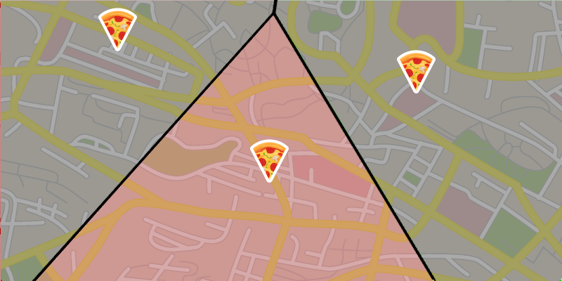
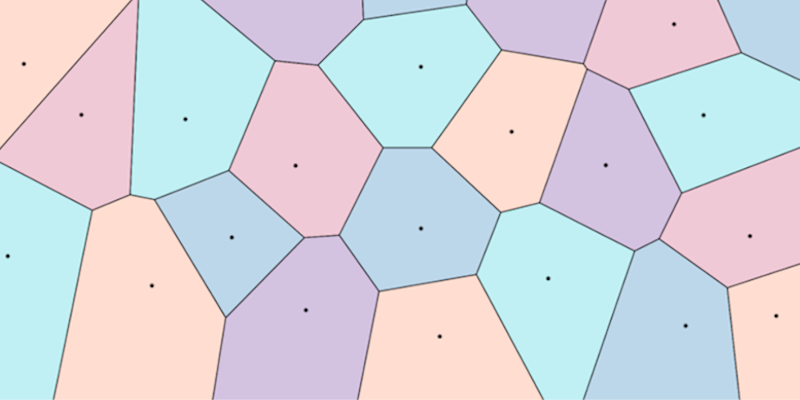

Suppose that you are hungry and decide to order some pizza from your local chain. The pizza chain has several different locations and naturally, your preference goes to the nearest one: a freshly-baked pizza tastes better! How do you find this closest pizza joint?
One way is to consult a Voronoi diagram of the pizza locations. This special kind of map separates the city into areas, one for each pizzeria. Every region tells you which pizza store is the closest.
For instance, if you live in the red part of the map, then you should order from the pizzeria at the bottom.

Given a collection of centers, a Voronoi diagram is a partition of the plane in regions. Each center induces a region that holds all the points of the plane for which the closest center is the given one. For this app, closest is meant with respect to the euclidean distance.

Simply drag and release to place a new center. Shake your phone to change the color scheme.
G.M. 2020 -- Version 1.0